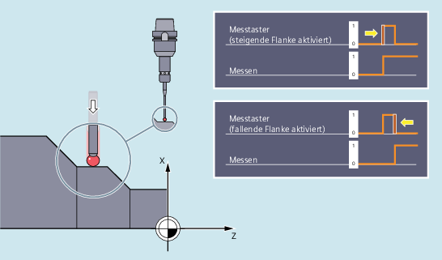
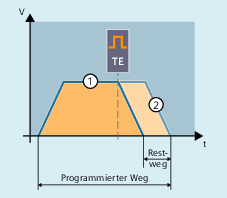

Auslöser für die Messung ist das im Messsatz programmierte Trigger-Ereignis, also entweder die steigende (0 → 1) oder fallende (1 → 0) Flanke von Messtaster 1 oder 2:
Bei Eintreffen des Trigger-Ereignisses werden die Positionen aller verfahrenen Bahn- und Positionierachsen des Satzes erfasst und in Systemvariablen abgelegt.
| Hinweis |
Ist in einem Messsatz eine Geometrieachse programmiert, werden die Messwerte für alle aktuellen Geometrieachsen abgelegt. Ist in einem Messsatz eine an einer Transformation beteiligte Achse programmiert, werden die Messwerte aller an dieser Transformation beteiligten Achsen abgelegt. |
Mit MEAS oder MEASF werden die Verfahrbewegungen des Satzes nach Eintreffen des Trigger-Ereignisses definiert abgebremst (Messen mit Restweglöschen), mit MEAW bis zum Ende fortgesetzt (Messen ohne Restweglöschen):
① | Messen mit Restweglöschen (MEAS/MEASF) |
② | Messen ohne Restweglöschen (MEAW) |
Die Messtaster-Messwerte der erfassten Achsen sind über folgende Systemvariablen im Teileprogramm und in Synchronaktionen lesbar:
Systemvariable | Bedeutung |
|---|---|
$AA_MM[<Axis>] | Messtaster-Messwert im Maschinenkoordinatensystem |
$AA_MW[<Axis>] | Messtaster-Messwert im Werkstückkoordinatensystem |
Ist im Programm eine Auswertung erforderlich, ob ein Messtaster ausgelenkt wurde bzw. geschaltet hat, kann der Status über folgende Systemvariablen abgefragt werden:
Systemvariable | Bedeutung | Datentyp | Wert | |
|---|---|---|---|---|
$A_PROBE[<n>] | Auslenkungszustand des Messtasters | INT | 0 | Messtaster nicht ausgelenkt. |
1 | Messtaster ausgelenkt. | |||
$AC_MEA[<n>] | Schaltzustand des Messtasters $AC_MEA[<n>] wird zu Beginn einer Messung automatisch zurückgesetzt. | INT | 0 | Messtaster hat nicht geschaltet. |
1 | Messtaster hat geschaltet. | |||